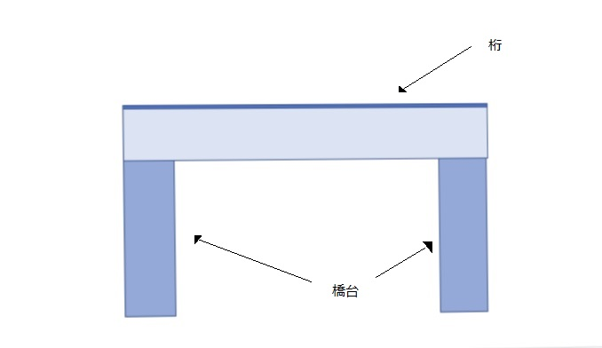

基本的な橋の構造
１．はじめに
このホームページは、橋の種類について基本的な構造別にまとめたものです。
私は今年から実家を離れ、新生活をはじめました。
その引越しの際に様々な構造をした橋を見て、それぞれの構造に興味を持ったので、調べたことをホームページにまとめてみようと思います。
２．橋の構造（６種類）
・桁橋
最も単純で一般的な構造
施工や設計が簡単だが、橋台と橋台の間隔が短い。

・ラーメン橋
桁と橋台を強力に接合した構造。桁橋より強度が強い。
どちらもラーメン橋の一種

・トラス橋
三角形の骨組みを組み合わせた構造
力を合理的に伝達することができる。桁橋よりも全長の長い橋を造れる。
・アーチ橋
アーチ状の骨組みを使い、アーチの性質を利用した構造
力を合理的に伝達することができる。観賞用にも優れている。
アーチは上にある場合と下にある場合がある
・斜張橋（しゃちょうきょう）
桁を塔から斜めにケーブルで引っ張る構造
全長の長い橋によく用いられ、観賞用にも優れている。ケーブルがほとんどの力を負担している。
・吊橋
空中に張り渡したケーブルから吊り材で桁を吊った構造
全長の長い橋に用いられる。ケーブルが全ての力を負担している。
３．まとめ
橋の構造について調べてみて、それぞれ橋をかけるのに適した距離が異なることや、力の伝わり方が異なることがわかりました。
つまり、構造ごとの特徴を考慮して、私達が安全に使えるように、橋は造られているようです。
参考文献
橋梁の基礎知識
橋の構造とは？５分でわかる全１２種類の名称、特徴、強度、構造計算
その１ 橋梁の構造と種類について